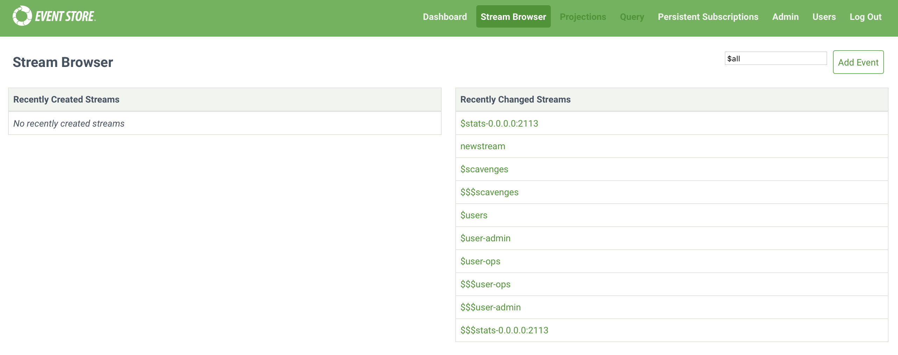
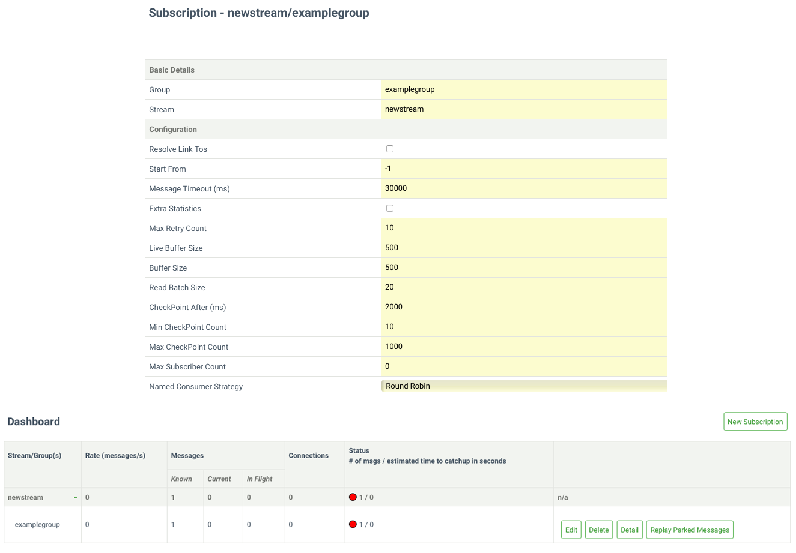

Step 2 - Read events from a stream and subscribe to changes
This getting started guide shows you how to get started with Event Store using the Atom publishing protocol as the primary interface.
Note
The described is for development and evaluation of Event Store. It does not describe a production setup. The HTTP examples use cURL, but you can read Atom feeds with a wide variety of applications and languages.
This second step covers reading events from a stream and subscribing to changes to events in a stream.
Read a stream of events
Event Store exposes all streams as atom feeds, and you can read data from the stream by navigating to the head URI of the stream http://127.0.0.1:2113/streams/<STREAM_ID> with cURL, or click the Stream Browser tab in the Admin UI and you see the stream you created in step 1.

curl -i -H "Accept:application/vnd.eventstore.atom+json" "http://127.0.0.1:2113/streams/newstream"
Note
This returns the feed in JSON format, you can also use Accept:application/atom+xml if you prefer XML.
To use the .NET API, use the following method passing the stream name, the start point in the stream, the number of events to read and whether to follow links to the event data:
foreach (var evt in readEvents.Events)
Console.WriteLine(Encoding.UTF8.GetString(evt.Event.Data));
Next Steps
Read this guide for more information on how to read events with the .NET API.
Read a single event
The feed has a single item inside of it, the one you posted in part 1. You can see details of the event in the Stream Browser tab in the Admin UI by selecting a stream to see its events, and then selecting an event. Or with cURL, issue a GET to the alternate URI value from the response above.
curl -i http://127.0.0.1:2113/streams/newstream/0 -H "Accept: application/json"
Note
You can also use Accept: text/xml if you prefer XML.
To use the .NET API, use the following method passing the stream name, the event you want to read and wether to return the event data:
Console.WriteLine(Encoding.UTF8.GetString(readResult.Event.Value.Event.Data));
}
Paginating through events
For longer feeds of events than this example, you need to paginate through the feed, reading a certain number of events at a time.
You can use the HTTP API to paginate through the feed using previous and next links within the stream. Or you can use a read method of the .NET API (and JVM client), to loop through events a certain number at a time.
Subscribing to receive stream updates
A common operation is to subscribe to a stream and receive notifications for changes. As new events arrive, you continue following them.
You can create subscriptions and watch events as they arrive under the Persistent Subscriptions tab, or use an API method.
Create subscription in the admin UI
- Click Persistent Subscriptions
- Enter a name for this subscription group (this can be any value you choose).
- Enter the name of the stream you want to subscribe to.
- Configure the other options. You can find more information about the options in the .NET API PersistentSubscriptionSettings object.
- Click Create to create the new subscription.

Create a subscription programmatically
curl -i -X PUT -d $'{"startFrom": 0,"resolveLinktos": false}' http://localhost:2113/subscriptions/newstream/examplegroup -u admin:changeit -H "Content-Type: application/json"
Subscription types
There are three types of subscription patterns, useful in different situations
Volatile subscriptions
This subscription calls a given function for events written after establishing the subscription. They are useful when you need notification of new events with minimal latency, but where it's not necessary to process every event.
For example, if a stream has 100 events in it when a subscriber connects, the subscriber can expect to see event number 101 onwards until the time the subscription is closed or dropped.
Catch-up subscriptions
This subscription specifies a starting point, in the form of an event number or transaction file position. You call the function for events from the starting point until the end of the stream, and then for subsequently written events.
For example, if you specify a starting point of 50 when a stream has 100 events, the subscriber can expect to see events 51 through 100, and then any events are subsequently written until you drop or close the subscription.
Persistent subscriptions
Note
Persistent subscriptions exist in version 3.2.0 and above of Event Store.
This subscription supports the "competing consumers" messaging pattern and are useful when you need to distribute messages to many workers. Event Store saves the subscription state server-side and allows for at-least-once delivery guarantees across multiple consumers on the same stream. It is possible to have many groups of consumers compete on the same stream, with each group getting an at-least-once guarantee.
Next step
In this second part of our getting started guide you learned how to read events from a stream and subscribe to changes. The next part covers projections, used to give you continuous queries of your data.